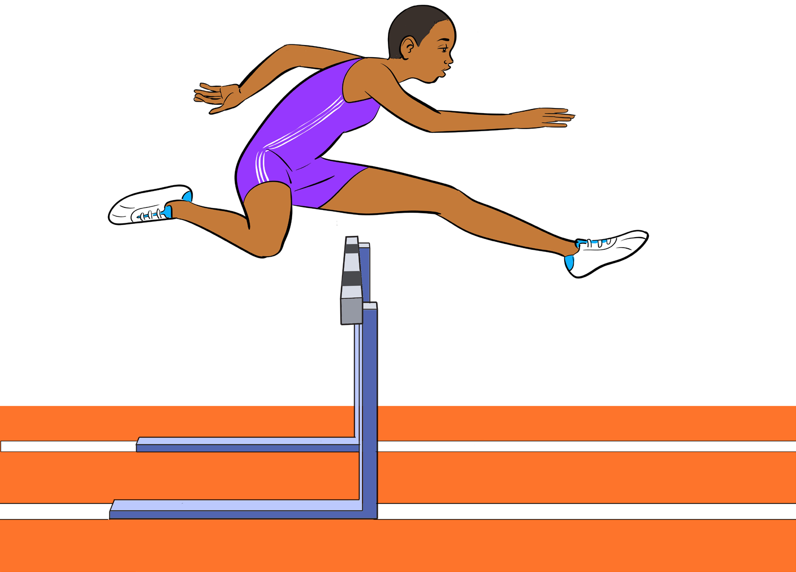

Approach to the first hurdle
During the approach, the runner straightens up the body and adopts the normal sprinting position to be ready for take-off. In this stage, the runner starts to reduce the length of strides in order to be ready to jump over the hurdle.
Clearance and running between hurdles
The runner runs and jumps over the hurdle and lands ahead of it, then continues striding to the next hurdle to the finishing point of the race. Each hurdle must be cleared quickly and safely. The first requirement is keeping the proper distance for tackling of the hurdle to execute a better clearance, as shown in Figure 5.14. The fundamental movements in hurdle clearance are the action of the leading leg, the trailing leg, arms, position of the upper body, length of the hurdle stride and the three-step rhythm between the hurdles.

Action of the leading leg
The thigh of the leading leg should be lifted over the obstacles. In this phase, the trailing leg points downward almost vertically and completes its drive by being projected vigorously towards the edge of the hurdle;
The downward movement of the leg sets in immediately afterward. The leading leg is slightly flexed at the knee joint;